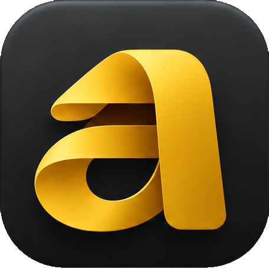
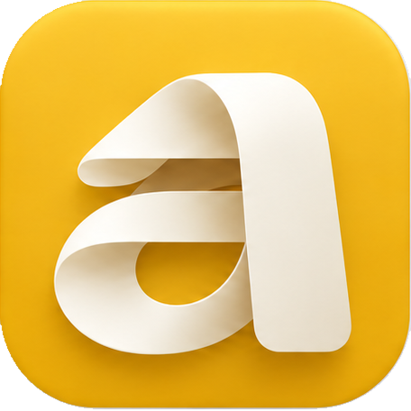
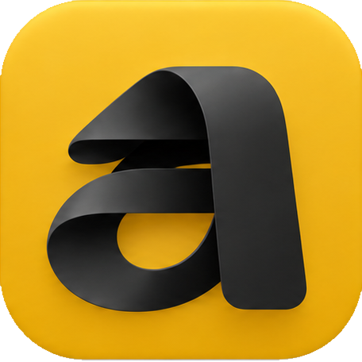

Calm. Precise.
Crafted.
A native macOS browser. A warm mustard accent, quiet neutral surfaces, generous spacing and the approved folded-ribbon mark.
 01 / Porcelain
01 / Porcelain
02 / Graphite
03 / Ivory on mustard
04 / Graphite on mustardColor
Mustard#E9B520
Graphite#202321
Porcelain#FAF9F5
Highlight#F3CA3D
Mustard is the accent. Use porcelain or graphite for the main field. Fold shading belongs to the artwork; avoid adding independent gradients, bevels or new color casts to the logo.

Keep the name lowercase. Use the supplied wordmark silhouette for branded lockups, with generous separation from supporting copy.
Composition
- Keep one focal point and generous empty space.
- Allow at least one quarter of the icon width as clear space around an isolated icon.
- Scale the complete mark proportionally, keeping its folds and negative spaces intact.
- Use the abstract background fold as a cropped supporting surface, separate from the logo.
- Use the factual descriptor “A native macOS browser.” Keep feature claims out of the graphics until confirmed.
Use the files
GitHub social images, README headers, the social card and logo lockups live in social/; icons and wordmarks live in logos/; color values live in tokens/brand-tokens.json. See README.md for the file list and usage rules. Light and dark treatments use the same source artwork.
Source fidelity
The icon is the approved raster artwork, cropped from the original presentation. Its native source is 456 × 456 px. The wordmark source is 180 × 76 px. Large exports do not create additional source detail. A vector logo master is not included yet.